Dispositivos de Almacenamiento
Temas de ENCO · 4/13
- 1. Formatos de Servidores - Racks y Blades
- 2. Centros de Procesamiento de Datos (CPDs)
- 3. Virtualización de Servidores
- 4. Dispositivos de Almacenamiento
- 5. Subsistemas de Disco
- 6. Fibre Channel y redes SAN
- 7. Almacenamiento IP
- 8. Sistemas de ficheros y almacenamiento en red
- 9. Virtualización del almacenamiento
- 10. Backup
- 11. Backup en red y software para backup
- 12. Archivado de la información
- 13. Hardware para backup
4.1 Por qué importa el almacenamiento
Durante tres décadas la industria del almacenamiento estuvo estancada: cambiaron las interfaces y creció la capacidad de los discos, pero la velocidad de los discos duros (HDD) apenas varió en 30 años. Mientras tanto, el rendimiento de las CPUs, siguiendo la ley de Moore, mejoró aproximadamente un millón de veces. Para compensar unos discos de rendimiento casi constante se aumentó el número de unidades y se usó RAID.
La solución llegó con los discos de estado sólido (SSD), que han cambiado los patrones de E/S para siempre: se pasa de unas 300 IOPS (operaciones de entrada/salida por segundo) a 40.000-400.000 IOPS.
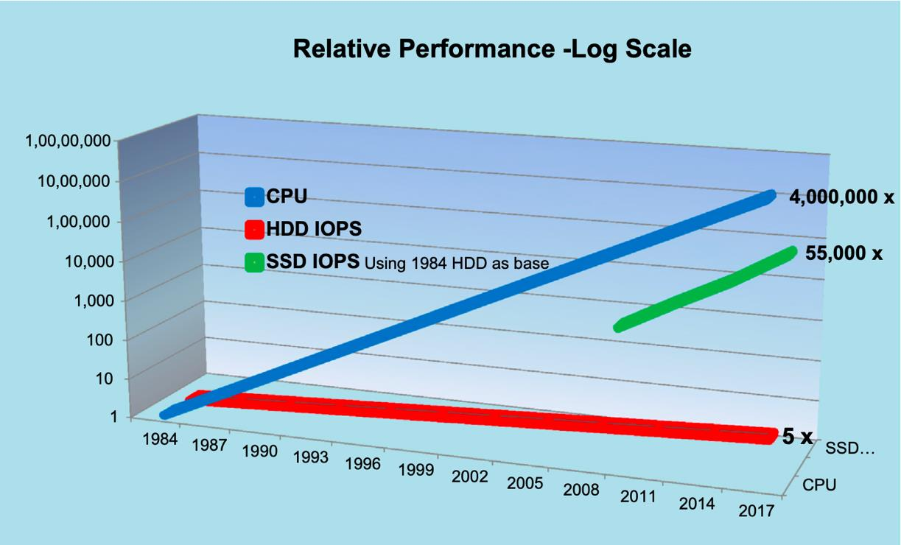
Escala logarítmica, tomando como base un HDD de 1984: hasta 2017 la CPU mejora 4.000.000×, las IOPS de un HDD solo 5× y las de un SSD 55.000×.El texto de la diapositiva dice que la CPU mejoró "un millón de veces"; la gráfica marca 4.000.000×. El orden de magnitud es el mismo.
El almacenamiento es hoy un elemento central de muchos CPDs, y su gestión es más difícil que la del procesamiento, hasta el punto de hablarse de una filosofía centrada en el almacenamiento. Algunas cifras:
- El volumen mundial de datos crece un 25% al año, hasta 527 ZB/año en 2029 (1 ZB =
bytes). - El 89% de los datos de los CPDs de los grandes proveedores cloud está en discos duros (HDD).
- El 99% de las organizaciones, según una encuesta de Seagate (2026), espera que la IA aumente sus necesidades de almacenamiento en los próximos tres años.
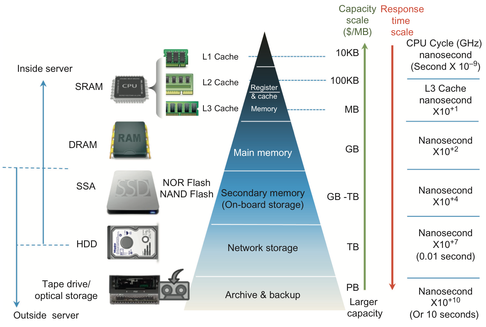
De arriba abajo, cada nivel es más grande, más barato por byte y más lento: cachés L1-L3 (nanosegundos), memoria principal (DRAM), almacenamiento secundario (SSD y HDD), almacenamiento en red y archivo/backup en cinta (hasta segundos).4.2 Discos magnéticos (HDD)
Los HDD siguen siendo la tecnología dominante, aunque cabe preguntarse por cuánto tiempo. Su densidad no ha dejado de crecer (1,4 Tbits por pulgada² en 2015, Seagate) gracias a mejoras como la grabación magnética asistida por calor (HAMR), los medios con bits modelados (BPM) y la grabación magnética en tejas (SMR), que solapa ligeramente las pistas como las tejas de un tejado para meter más.
La alternativa son los SSD: menos capacidad y más caros, pero con muy buena velocidad y consumo. Se usan en ciertas aplicaciones y se espera que convivan con los HDD.
Para entenderlo mejor
Heat-assisted magnetic recording y Patterned media (artículos, inglés; enlazados en las diapositivas). El vídeo sobre SMR de las diapositivas ya no está disponible públicamente; la alternativa es Shingled magnetic recording.
4.2.1 Estructura física
Un HDD tiene varios platos apilados que giran, y un brazo con una cabeza de lectura/escritura por cada superficie. Cada plato se divide en pistas concéntricas, y cada pista en sectores; el conjunto de pistas que están a la misma distancia del centro en todos los platos forma un cilindro. El número de sectores por pista depende de lo cerca que esté del centro (las pistas exteriores, más largas, tienen más).
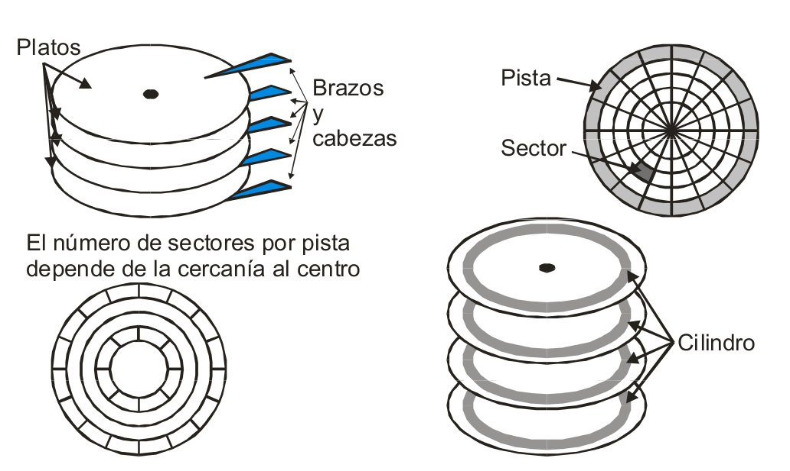
Para entenderlo mejor
Cómo funciona un disco duro (por dentro) — los platos, las cabezas y la electrónica de un disco real abierto (vídeo, 5:40).
4.2.2 Prestaciones
El rendimiento de un HDD depende de dos cosas. La velocidad de acceso suma el tiempo de búsqueda (mover la cabeza hasta la pista), el tiempo de asentamiento de la cabeza (llegar al sector) y la latencia (esperar a que los datos pasen bajo la cabeza al girar). La tasa de transferencia depende de la velocidad de giro y de la interfaz que envía los datos una vez leídos (en servidores, SATA, SCSI, SAS o FC; en el hogar, SATA, Wi-Fi, USB, FireWire...).
La velocidad de giro es el factor más importante: va de 4.200 a 15.000 rpm, y en la mayoría de CPDs se usan 7.200, 10.000 y 15.000 rpm.
| RPM | Latencia (ms) | Búsqueda media (ms) | IOPS | IOPS optimizadas |
|---|---|---|---|---|
| 15.000 | 2 | 4,6 | 150 | 300 |
| 7.200 | 4,2 | 8 | 82 | 164 |
| 5.400 | 5,6 | 10 | 64 | 128 |
Un disco de 15.000 rpm es aproximadamente el doble de rápido que uno de 7.200 rpm, pero aun así sus tiempos de acceso son del orden de 6-7 ms (una eternidad para una CPU). Las mejoras vinieron de los buses serie (SAS/SATA) y de discos más "inteligentes", que leen un conjunto de comandos y los ejecutan en el orden óptimo para maximizar las IOPS (por eso la columna "optimizadas" duplica las IOPS): Native Command Queuing (NCQ) en SATA y Tagged Command Queuing (TCQ) en SAS.
Analogía: el repartidor
Si un repartidor entrega los paquetes en el orden en que se los dieron, cruza la ciudad de punta a punta varias veces. Si los reordena por calles (NCQ/TCQ), hace la misma ruta en la mitad de tiempo. La cabeza del disco es el repartidor y las pistas son las calles.
4.2.3 Formatos y fiabilidad
Los factores de forma (anchura del disco) más comunes son 3,5 y 2,5 pulgadas.
En fiabilidad, el MTBF (tiempo medio entre fallos) de los discos SCSI es de 1.500.000 horas y el de los SATA, de 600.000 horas, aunque hay versiones SATA para servidores con fiabilidad comparable a SCSI. En un CPD fallan entre el 0,70% y el 0,78% de los discos al año. Los errores se corrigen con códigos CRC, y los fallos se predicen con SMART en SATA y mediante comandos en SCSI.
4.3 Discos de estado sólido (SSD)
Los SSD reemplazan a los discos tradicionales usando las mismas interfaces.
| Ventajas | Desventajas |
|---|---|
| Mayor velocidad de acceso | Menor capacidad |
| Menor consumo y menos calor | Mayor coste |
| Menor peso y menos ruido | Más difícil recuperar datos si fallan |
| Mayor MTBF (2 millones de horas) |
Comparativa de un SSD y un HDD empresariales de la misma época:
| Atributo | SSD | HDD |
|---|---|---|
| Tamaño | 2,5" | 2,5" |
| Capacidad | 100/200/400 GB | 146/300 GB |
| Medio | SLC NAND | 1-2 discos / 2-4 cabezas |
| Interfaz | SAS 6 Gbps | SAS 6 Gbps |
| Tiempo medio de acceso | 0,1 ms | 3,0 ms (lectura) / 2,7 ms (escritura) |
| Lectura aleatoria (IOPS) | 90.000 | 385 |
| Escritura aleatoria (IOPS) | 16.000 | 325 |
| Lectura secuencial (64 K) | 500 MB/s | 200 MB/s |
| Escritura secuencial (64 K) | 250 MB/s | 200 MB/s |
| MTBF | 2,0 millones de horas | 1,6 millones de horas |
| Errores de lectura irrecuperables | 1 por |
1 por |
| Tensión | 5/12 V | 5/12 V |
| Consumo en reposo | < 1 W | 4,5 W |
| Consumo en funcionamiento | 6,5 W | 8,7 W |
| Ruido | 0 dB | 3,3 dB |
| Peso | 152 g | 220 g |
| Garantía | 5 años | 5 años |
| Coste/GB | 0,47-1 $ | 0,04-0,075 $ |
La diferencia clave está en el acceso aleatorio: el SSD da más de 200 veces las IOPS del HDD, porque no tiene partes móviles. En lectura secuencial la ventaja es mucho menor, y el HDD sigue siendo más de 10 veces más barato por GB.
4.3.1 Tecnología NAND Flash
Los SSD usan memoria NAND Flash, cuyas celdas se distinguen por cuántos bits guardan:
| Tipo | Bits por celda | Escrituras soportadas |
|---|---|---|
| SLC (single-level cell) | 1 | hasta 100.000 |
| MLC (multi-level cell) | 2 | 3.000 |
| eMLC (MLC para empresas) | 2 | hasta 30.000 |
| TLC (triple-level) y QLC (quad-level) | 3 y 4 | (más capacidad, menos escrituras) |
Cuantos más bits por celda, más capacidad y menor coste, pero menos escrituras aguanta la celda.
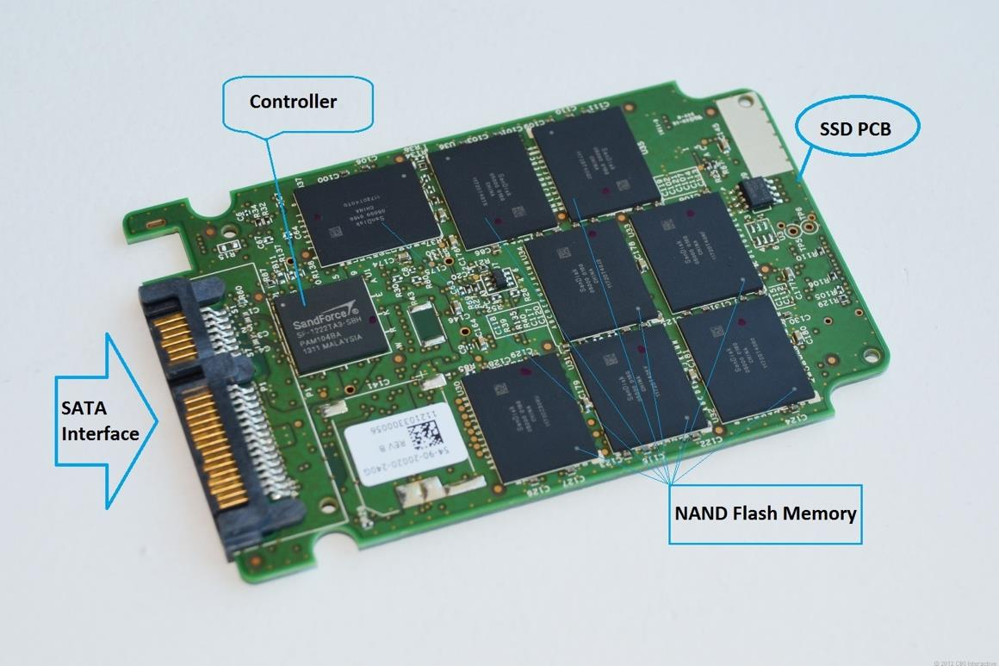
Interfaz SATA, controlador y chips de memoria NAND Flash en la placa del SSD.Para entenderlo mejor
SLC, MLC, TLC and QLC — SSD Flash Memory Explained — por qué guardar más bits por celda reduce la vida útil (vídeo, 1:20, inglés).
4.3.2 Problemas: write amplification y wear leveling
En un SSD los datos no se pueden sobrescribir: una página escrita no se puede reescribir hasta borrar el bloque entero que la contiene. Así, para modificar unas páginas, se escriben las versiones nuevas en páginas libres, las antiguas quedan inválidas y, cuando no quedan páginas libres, hay que copiar las válidas a otro bloque y borrar el antiguo (garbage collection). Esto provoca la amplificación de escritura (write amplification): el disco escribe físicamente más datos de los que pidió el usuario.
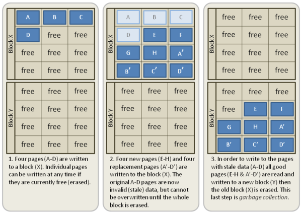
1: se escriben 4 páginas (A-D) en el bloque X. 2: se escriben 4 páginas nuevas (E-H) y versiones nuevas de A-D (A'-D'); las originales quedan inválidas. 3: para recuperar el espacio, las páginas válidas se copian al bloque Y y el bloque X se borra entero.Además, los bloques se estropean si se escriben muchas veces, así que hay que repartir las escrituras por todo el disco para que se desgasten por igual: es el wear leveling (nivelación del desgaste).
Analogía: la libreta con bolígrafo
Un SSD es como una libreta escrita a bolígrafo que solo se puede "borrar" arrancando la hoja entera. Para corregir una línea, la reescribes en una hoja nueva y tachas la vieja; cuando la libreta se llena de tachones, pasas a limpio lo útil y arrancas las hojas (garbage collection). Y si siempre escribieras en la misma hoja, se rompería antes: por eso se reparte el uso entre todas (wear leveling).
Para entenderlo mejor
Write amplification y Wear leveling (artículos, inglés; enlazados en las diapositivas).
4.4 Conexión de los discos
4.4.1 Camino de E/S entre la CPU y el almacenamiento
Los datos viajan de la RAM a los discos atravesando tres buses:
- El bus del sistema conecta CPU y RAM: muy rápido (frecuencia y ancho de banda), pero admite pocos dispositivos y es corto.
- Como el resto de dispositivos no caben en el bus del sistema (limitaciones físicas), se conectan al bus de E/S del host, cuya tecnología más extendida es PCI. Un chip puente (bridge) une ambos buses.
- Los discos se conectan al servidor a través de un HBA (Host Bus Adapter, adaptador de bus del host) o de un controlador en la placa, y la conexión entre ese controlador y el disco es el bus de E/S.
La comunicación con los periféricos la gestionan los drivers, que son en parte programas en la CPU y en parte circuitos (ASICs) de la placa (como un controlador SCSI) o de tarjetas de expansión PCI.
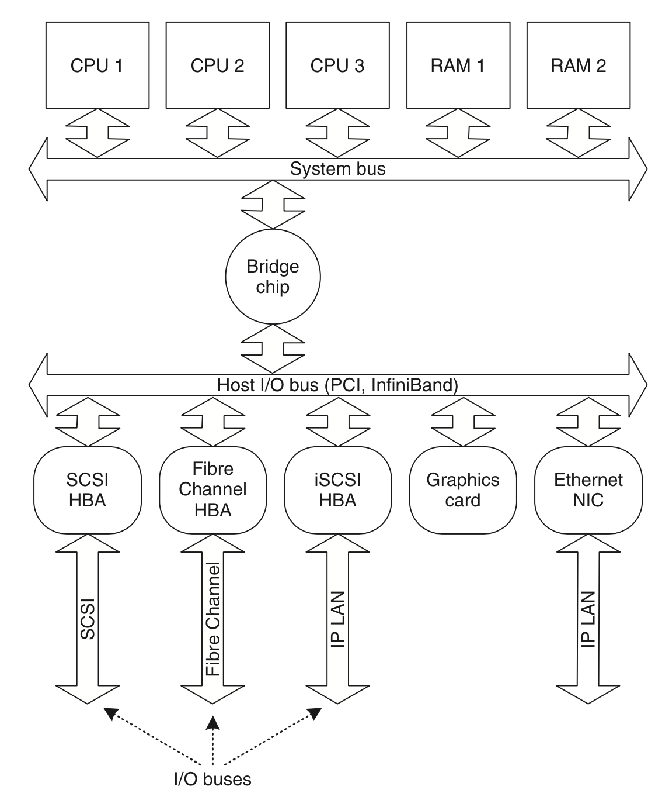
CPUs y RAM en el bus del sistema; el chip puente lo une al bus de E/S del host (PCI, InfiniBand), donde se conectan los HBA (SCSI, Fibre Channel, iSCSI), la tarjeta gráfica y la tarjeta de red, cada uno con su bus de E/S.4.4.2 Interfaces
Los discos son todos parecidos, pero los de servidor tienen estándares de calidad más altos. Los PCs y estaciones de trabajo usan SATA; los discos de gama alta para servidores usan interfaces de la familia SCSI: SCSI paralelo, SAS (Serial Attached SCSI) y Fibre Channel. Para conexiones externas se usan USB, FireWire, eSATA, etc.
SCSI (Small Computer System Interface)
Es un bus paralelo compartido por varios dispositivos, con un protocolo SCSI que define cómo se comunican. Sus generaciones:
| Interfaz | Bus | Reloj | Ancho de banda | Cable máx. | Dispositivos máx. |
|---|---|---|---|---|---|
| SCSI | 8 bits | 5 MHz | 5 MB/s | 6 m | 8 |
| Fast SCSI | 8 bits | 10 MHz | 10 MB/s | 1,5-3 m | 8 |
| Wide SCSI | 16 bits | 10 MHz | 20 MB/s | 1,5-3 m | 16 |
| Ultra SCSI | 8 bits | 20 MHz | 20 MB/s | 1,5-3 m | 5 a 8 |
| Ultra Wide SCSI | 16 bits | 20 MHz | 40 MB/s | 1,5-3 m | 5 a 8 |
| Ultra2 SCSI | 8 bits | 40 MHz | 40 MB/s | 12 m | 8 |
| Ultra2 Wide SCSI | 16 bits | 40 MHz | 80 MB/s | 12 m | 16 |
| Ultra3 SCSI | 16 bits | 40 MHz DDR | 160 MB/s | 12 m | 16 |
| Ultra-320 SCSI | 16 bits | 80 MHz DDR | 320 MB/s | 12 m | 16 |
| Ultra-640 SCSI | 16 bits | 160 MHz DDR | 640 MB/s | — | 16 |
El ancho de banda sale de multiplicar el ancho del bus por el reloj (y por 2 con DDR): por ejemplo, 16 bits = 2 bytes × 80 MHz × 2 = 320 MB/s en Ultra-320.
Cada dispositivo del bus tiene un Target ID, que también fija su prioridad (en un bus de 16, el orden de prioridad es 7 > 6 > ... > 0 > 15 > 14 > ... > 8), y dentro de cada uno puede haber varios LUN (Logical Unit Number), por ejemplo cada volumen de un subsistema de discos o cada unidad de una librería de cintas.
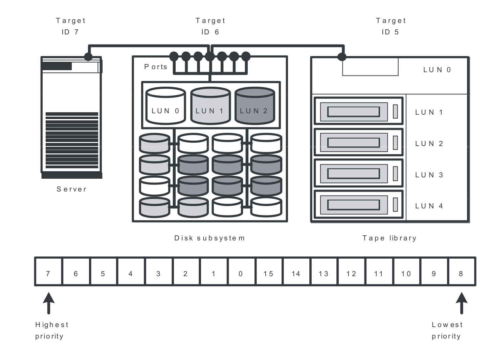
SAS (Serial Attached SCSI)
Es la versión serie de SCSI:
| Interfaz | Bus | Reloj | Ancho de banda | Cable máx. | Dispositivos máx. |
|---|---|---|---|---|---|
| SSA | 1 bit | 200 MHz | 40 MB/s | 25 m | 96 |
| SSA 40 | 1 bit | 400 MHz | 80 MB/s | 25 m | 96 |
| FC-AL 1Gb | 1 bit | 1 GHz | 100 MB/s | 0,5-3 km | 127 |
| FC-AL 2Gb | 1 bit | 2 GHz | 200 MB/s | 127 | |
| FC-AL 4Gb | 1 bit | 4 GHz | 400 MB/s | 127 | |
| iSCSI | — | — | Depende de la red | ||
| SAS 3Gbit | 1 bit | 3 GHz | 300 MB/s | 6-8 m | 16.256 |
| SAS 6Gbit | 1 bit | 6 GHz | 600 MB/s | 10 m | 16.256 |
Las versiones más nuevas son SAS-3 a 12 Gbit/s (1.200 MB/s) y SAS-4 a 22,5 Gbit/s. Sus características:
- Conexiones punto a punto full duplex (envía y recibe a la vez): no se comparte el ancho de banda, salvo si se usa un expansor.
- Hasta 16.256 dispositivos por puerto y 65.536 en total.
- Usa los mismos comandos que SCSI y permite conectar discos SATA.
- Identifica los dispositivos con World Wide Names (WWN) en lugar de IDs SCSI.
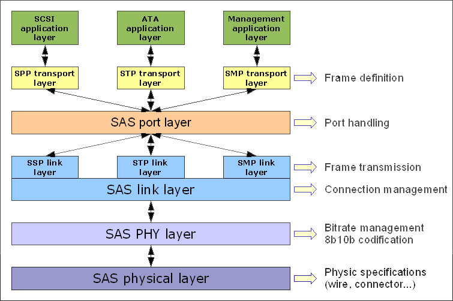
Capas de SAS de arriba abajo: aplicación (SCSI, ATA, gestión), transporte (SSP, STP, SMP: definen las tramas), puerto, enlace (transmisión de tramas y gestión de la conexión), PHY (codificación 8b/10b) y física (cables, conectores).Codificación 8b/10b
La usan PCI Express, FireWire 800, SATA, SAS, Fibre Channel, SSA, Gigabit Ethernet (no todos), InfiniBand, DVI y HDMI, DisplayPort, HyperTransport, USB 3.0 y muchos otros. Consiste en transmitir cada dato de 8 bits como una palabra de 10 bits. Esa redundancia permite detectar errores, incluir palabras de control, equilibrar el número de unos y ceros y extraer la señal de reloj de los propios datos, porque nunca hay más de 5 bits iguales seguidos. El precio es un 20% de ancho de banda: por eso un enlace de 3 Gbit/s da 300 MB/s y no 375.
Fibre Channel (FC)
Son los discos más rápidos y caros. El protocolo FC permite transmisión serie de alta velocidad a larga distancia (kilómetros), con baja tasa de errores y baja latencia; el protocolo FCP se implementa en hardware en el HBA para no cargar la CPU, y permite construir redes de almacenamiento (ver tema 6).
Serial ATA (SATA)
Pensado para equipos domésticos y semiprofesionales, aunque por su bajo precio tiene cierta presencia profesional. Es un bus serie como SAS y también usa 8b/10b. Versiones: SATA 3 Gbit/s (300 MB/s) y SATA 6 Gbit/s (600 MB/s).
| SAS | SATA | |
|---|---|---|
| Dúplex | Full duplex | Half duplex |
| Identificación | WWN | Por el puerto |
| Cola de comandos | Tagged Command Queuing | Native Command Queuing |
| Dispositivos | Discos, CD/DVD, escáneres, impresoras... | Solo discos y CD/DVD |
| Multipath (varias conexiones al mismo disco) | Sí | Solo algunas versiones |
| Precio | Bastante más caro | Barato |
| Detección y corrección de errores | Mejor (SMART) | Peor |
| Voltaje / longitud de cable | Más alto / hasta 10 m | Más bajo / 1 m |
4.4.3 SSD PCIe y NVMe
Los SSD más rápidos se conectan directamente al bus PCIe con la interfaz NVMe (la más popular), evitando el cuello de botella del controlador SATA o SAS. Hay tres formatos: U.2 (más caros, con más rendimiento y resistencia, típicos de CPDs), M.2 (formato muy pequeño que puede usar SATA o PCIe) y tarjeta PCI Express.
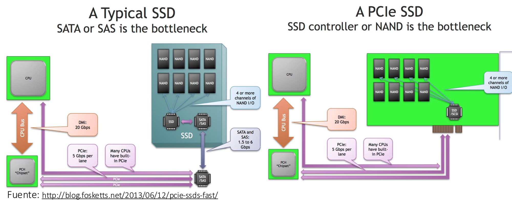
En un SSD normal el cuello de botella es la interfaz SATA/SAS; en un SSD PCIe, el controlador o la propia NAND.| Interfaz | IOPS | Throughput | Latencia | Colas | Comandos por cola |
|---|---|---|---|---|---|
| SATA | 60.000 a 100.000 | 6 Gbps | < 1 ms a > 100 ms | 1 | 32 |
| SAS | 200.000 a 400.000 | 12 Gbps | < 100 µs a > 100 ms | 1 | 256 |
| NVMe | 200.000 a 10.000.000 | 16 Gbps (Gen3x16) / 32 Gbps (Gen4x16) | < 10 µs a 225 µs | 65.535 | 65.536 |
4.5 Organización de los discos
- DAS (Direct-Attached Storage): discos conectados directamente al servidor; conveniente en entornos sencillos.
- JBOD (Just a Bunch Of Disks): varios discos en el mismo chasis, pero sin organización especial (cada uno va por su lado, o se concatenan uno detrás de otro).
- MAID (Massive Array of Inactive Disks): muchos discos baratos a los que rara vez se accede (se mantienen apagados la mayor parte del tiempo).
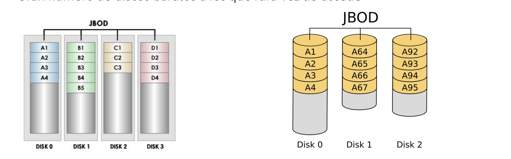
4.5.1 RAID
RAID (Redundant Array of Independent Disks) es la forma más eficiente de organizar varios discos: el controlador los presenta al sistema como un único disco lógico (/dev/md0 en las figuras) y reparte los datos entre ellos según el nivel de RAID.
| Nivel | Nombre | Idea |
|---|---|---|
| 0 | Striping | Datos entrelazados entre discos |
| 1 | Mirroring | Datos duplicados |
| 0+1 | Mirrored stripes | Espejo de dos RAID 0 |
| 10 | Striped mirrors | Striping sobre parejas en espejo |
| 3 y 4 | Paridad localizada | Un disco dedicado a la paridad |
| 5 | Paridad distribuida | La paridad se reparte entre todos |
| 6 | Paridad distribuida y duplicada | Dos paridades distintas |
RAID 0 (striping). Los bloques se reparten en orden entre los discos: A en el primero, B en el segundo, C en el tercero, D de nuevo en el primero... Como los discos trabajan en paralelo, es muy rápido y aprovecha todo el espacio, pero no tiene redundancia: si falla un disco, se pierde todo.
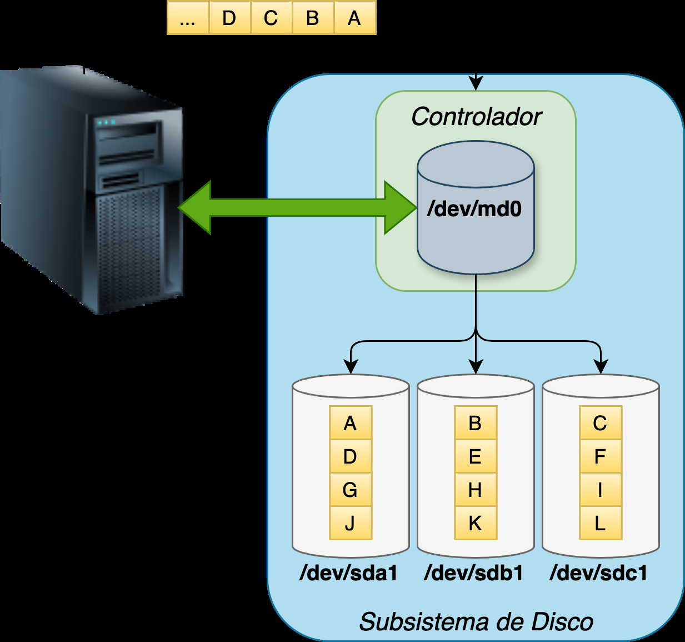
RAID 1 (mirroring). Cada bloque se escribe igual en dos discos. Si uno falla, el otro tiene todo, pero se pierde la mitad del espacio.
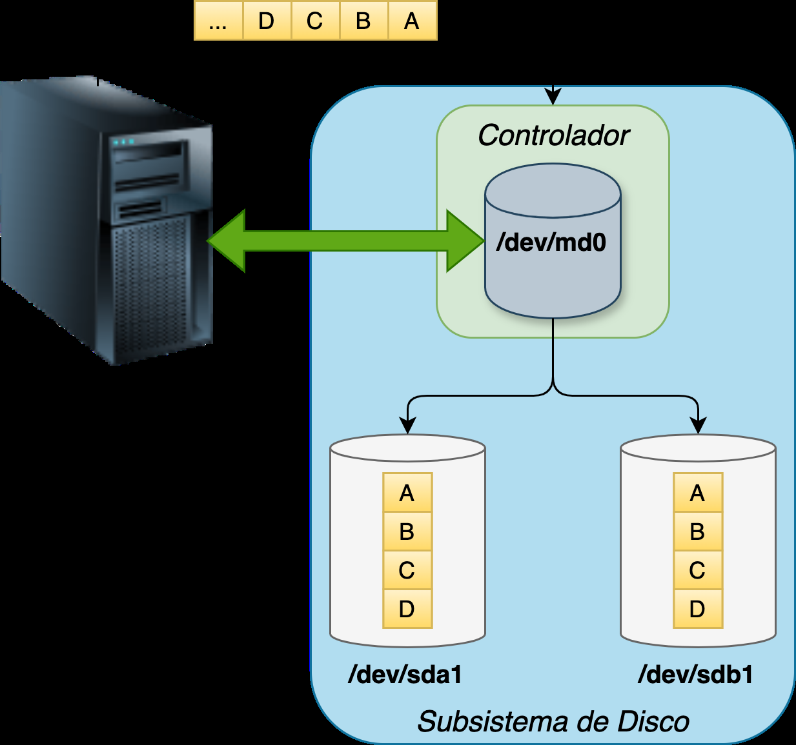
RAID 0+1 y RAID 10. Combinan los dos anteriores. En 0+1 (mirrored stripes) se hacen dos RAID 0 y se ponen en espejo; en 10 (striped mirrors) se hacen parejas en espejo y se hace striping sobre ellas. RAID 10 es más robusto: si falla un disco, solo se degrada su pareja, mientras que en 0+1 cae toda una mitad.
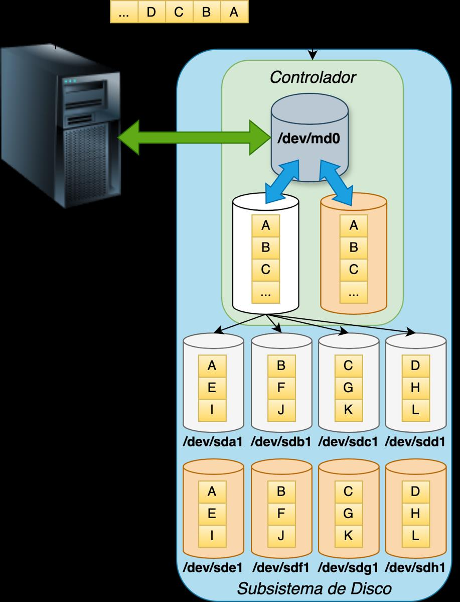
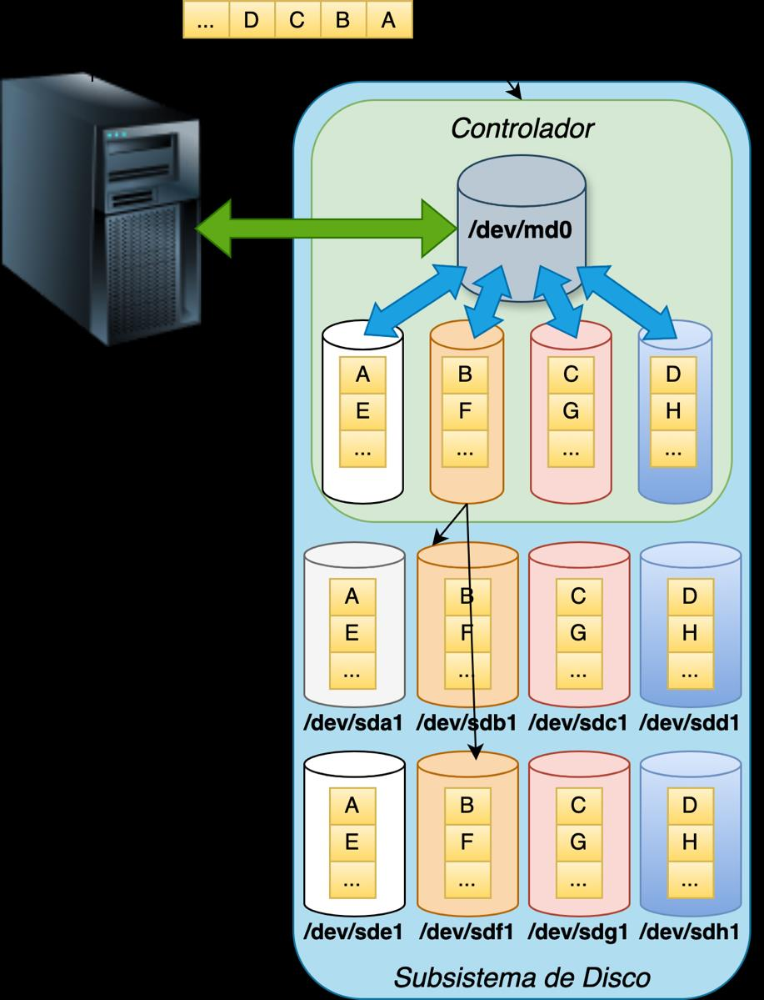
RAID 3 y 4 (paridad localizada). Los datos se reparten entre varios discos y un disco dedicado guarda la paridad de cada fila (P_ABC = paridad de A, B y C). Si falla un disco de datos, se reconstruye con la paridad. El problema es que toda escritura toca el disco de paridad, que se convierte en un cuello de botella.
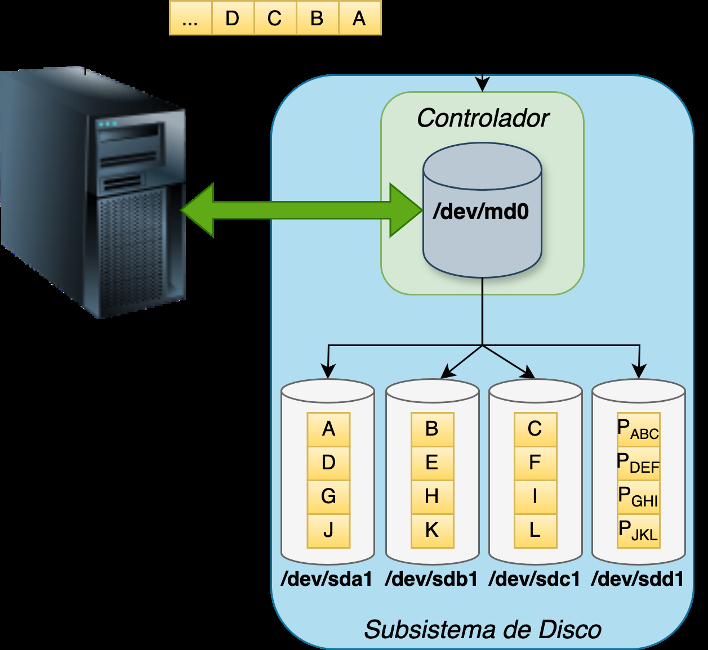
RAID 5 (paridad distribuida). Igual que el 4, pero la paridad se reparte entre todos los discos (cada fila la guarda un disco distinto), eliminando el cuello de botella. La paridad se calcula con XOR:
Para actualizar un dato
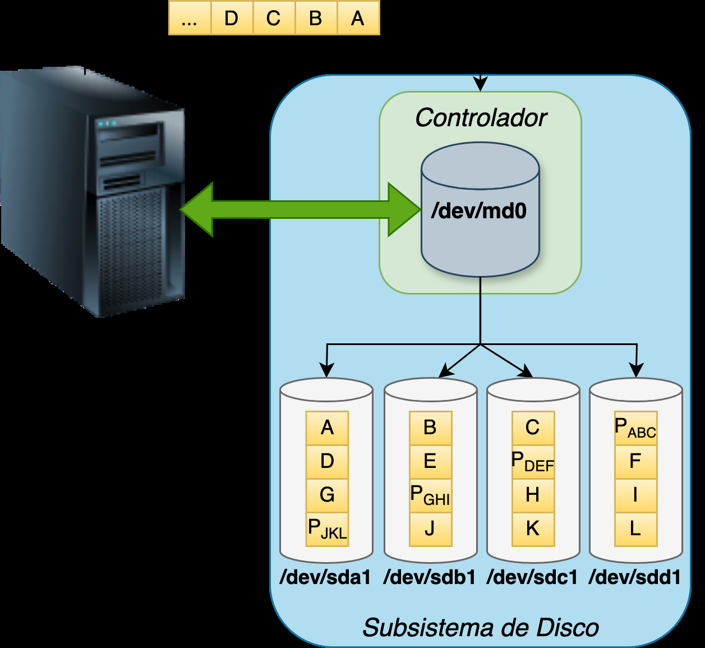
Ejemplo de paridad XOR
XOR da 1 cuando los bits son distintos y 0 cuando son iguales. Con bloques de 4 bits
| Operación | Resultado |
|---|---|
| 0001 | |
| Falla el disco de |
0110 (se recupera) |
| Se escribe |
0010 |
| Nueva paridad |
0011 (igual que |
Esto explica por qué RAID 5 escribe despacio: cada escritura obliga a leer el dato antiguo y la paridad antigua, y escribir el dato nuevo y la paridad nueva (4 operaciones). RAID 6 añade una segunda paridad distinta para aguantar dos fallos, a costa de escribir aún más lento.
Analogía: la suma de comprobación
La paridad es como apuntar el total de una cuenta: si sabes que A + B + C = 10 y se te borra B, puedes recuperarlo restando. Si cambias A, no hace falta volver a sumarlo todo: basta con sumar al total la diferencia. XOR funciona igual, pero con bits.
Para entenderlo mejor
RAID explicado: niveles, controladores y cómo funciona — los niveles RAID con esquemas (vídeo, 9:40).
Resumen de niveles
| Nivel | Tolerancia a fallos | Lectura | Escritura | Espacio extra |
|---|---|---|---|---|
| RAID 0 | Ninguna | Buena | Muy buena | Mínimo |
| RAID 1 | Alta | Pobre | Pobre | Alto |
| RAID 10 | Muy alta | Muy buena | Buena | Alto |
| RAID 4 | Alta | Buena | Muy, muy pobre | Bajo |
| RAID 5 | Alta | Buena | Muy pobre | Bajo |
| RAID 6 | Muy alta | Buena | Muy, muy pobre | Bajo |
Cuándo usar cada uno: RAID 0 para maximizar la velocidad de escritura cuando la fiabilidad no importa; RAID 10 para muchas escrituras rápidas con gran robustez (por ejemplo, logs de transacciones de bases de datos); RAID 4 y 5, seguros y baratos, pero con bajo rendimiento en escritura; RAID 6, para archivar datos (su escritura mejora con cachés de disco).
4.6 Cachés
4.6.1 Cachés de disco
Sirven para acelerar lecturas y escrituras, y son necesarias porque el bus de E/S es mucho más rápido que el disco leyendo o escribiendo. En lectura, se cargan los datos en la caché y se envían todos juntos, ocupando menos tiempo la interfaz y el bus, y se aprovechan los aciertos (datos que ya estaban en caché). En escritura, los datos se guardan en la caché y se escriben en el disco cuando se puede, lo que mejora la escritura de RAID 1, 4, 5 y 6.
4.6.2 Cachés en el RAID
Las cachés del controlador RAID funcionan además de las de los discos.
La caché de escritura puede llegar a varios GB y, por seguridad, tiene batería de respaldo y puede estar replicada. Las escrituras se guardan en ella, donde están seguras aunque se vaya la luz, y se pasan al disco en cuanto se puede y al ritmo que se puede. Así absorbe los picos de escrituras seguidos de periodos tranquilos y las escrituras secuenciales grandes, algo especialmente útil en los niveles RAID altos (5, 6), que escriben despacio.
La caché de lectura analiza los patrones de acceso para adivinar qué datos precargar. Como las lecturas son muy aleatorias, acertar un 40% ya se considera un buen resultado.
4.7 Ideas clave
- 30 años de HDD estancado (≈5× en IOPS) frente a CPU (≈10⁶×); los SSD pasan de ~300 a 40.000-400.000 IOPS. Datos: +25%/año, 527 ZB en 2029; el 89% sigue en HDD.
- HDD: platos, cabezas, pistas, sectores, cilindros. Acceso = búsqueda + asentamiento + latencia; el factor clave son las rpm (7.200 / 10.000 / 15.000); acceso ~6-7 ms; NCQ/TCQ reordenan comandos. MTBF SCSI 1,5 M h, SATA 0,6 M h; fallos 0,70-0,78%/año; CRC y SMART.
- SSD: NAND Flash (SLC 100.000, MLC 3.000, eMLC 30.000 escrituras; TLC, QLC). No se sobrescribe → write amplification; desgaste → wear leveling. Mucho más IOPS aleatorias, pero 10× más caro por GB.
- Camino de E/S: bus del sistema → bridge → bus de E/S del host (PCI) → HBA → bus de E/S.
- Interfaces: SCSI (paralelo, Target ID con prioridad, LUNs), SAS (serie, full duplex, WWN, 16.256 disp./puerto, admite SATA), FC (km, en hardware, redes SAN), SATA (barato, half duplex, 1 m). 8b/10b: 8 bits → 10 bits (errores, control, equilibrio, reloj; ≤ 5 bits iguales). NVMe sobre PCIe (U.2, M.2, tarjeta).
- DAS, JBOD, MAID. RAID: 0 (rápido, sin redundancia), 1 (espejo), 0+1 / 10, 3-4 (paridad en un disco), 5 (paridad distribuida, XOR), 6 (doble paridad). RAID 10 para BD, 5 barato pero escritura lenta, 6 para archivo.
- Cachés: de disco (agrupar lecturas, diferir escrituras) y de RAID (escritura con batería, GBs; lectura predictiva, 40% de acierto ya es bueno).